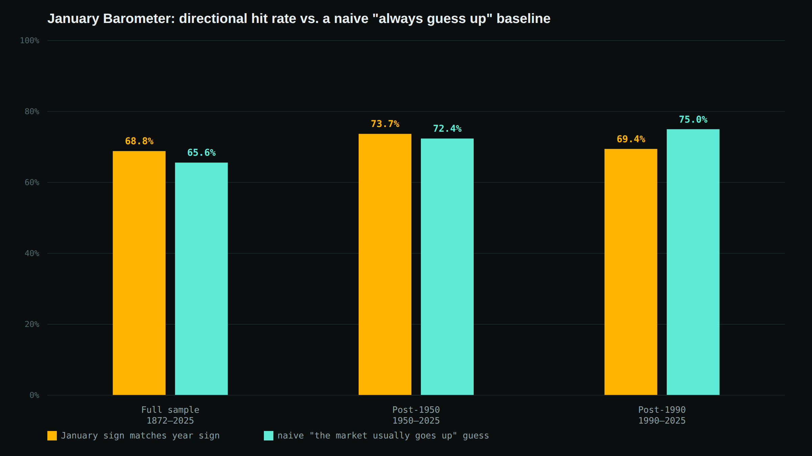
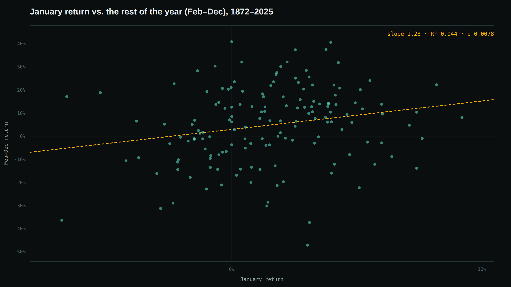

Does the January Barometer Actually Predict the Year? A 154-Year Test
"As January goes, so goes the year" is one of the oldest calendar rules in investing, popularized decades ago by Yale Hirsch through the Stock Trader's Almanac and repeated every year in financial media once January's numbers are in. The claim, stated plainly, is specific and checkable: if the S&P 500 finishes January higher, the full year tends to finish higher too — and vice versa. So instead of taking the pitch at face value, I tested it against 154 years of data.
Short version: there's a real, statistically significant relationship between January's return and the rest of the year — but it's much smaller than the "hit rate" statistics usually make it sound, because most of that hit rate is just the fact that the stock market goes up in most years regardless of what January did. Once you compare the barometer to that naive baseline instead of to a coin flip, its edge over the full 154-year sample is modest, and over the last 36 years it's lost to the naive baseline outright.
Methodology
I used Robert Shiller's monthly S&P 500 price dataset (the same source used in our leverage backtest), which runs from January 1871 through mid-2026. For every year from 1872 through 2025 — 154 years — I computed three numbers from the nominal price index (no dividends, matching how the January Barometer is conventionally stated as a price-only rule):
- January return — the index's percentage change from the prior December to that January
- Full-year return — from prior December through that December
- Feb–Dec return — from January through that December, i.e. the full year with January itself removed
That third figure matters. Comparing January's direction to the full year's direction is a weaker test than it looks, because January's own move is part of the full-year number — a big January gain mechanically nudges the full year toward positive territory even if nothing distinctive happens for the rest of the year. Testing January against Feb–Dec instead asks the sharper question: does January carry real information about the eleven months that come after it?
The headline hit rate — and the baseline it needs to beat
The number usually cited for the January Barometer is a "hit rate": how often the full year's direction matched January's direction. Over the full sample, that's 68.8%. That sounds impressive until you notice the S&P 500 has finished positive in 65.6% of all years regardless of January — so a forecaster who ignores January entirely and just always guesses "up" would have been right almost as often. The barometer's real edge over that naive baseline is the gap between those two numbers, and it's thin.
| Period | n (years) | Barometer hit rate | Naive "always up" baseline | Edge |
|---|---|---|---|---|
| Full sample | 154 | 68.8% | 65.6% | +3.2pp |
| Post-1950 | 76 | 73.7% | 72.4% | +1.3pp |
| Post-1990 | 36 | 69.4% | 75.0% | −5.6pp |
"Barometer hit rate" = share of years where January's sign matched the full year's sign. "Naive baseline" = share of all years in that period that finished positive, i.e. the accuracy of always guessing "up" without looking at January at all.

In the last 36 years, the naive guess actually beats the barometer outright — 75.0% vs. 69.4%. The market has been up so consistently since 1990 (27 of 36 years) that "the market usually goes up" is a genuinely hard bar to clear, and January's direction hasn't cleared it.
Isolating January: does it predict Feb–Dec, or is this just an artifact?
The hit-rate framing above still has the double-counting problem described in the methodology. So I reran the comparison against Feb–Dec returns only, and also ran a simple linear regression: (Feb–Dec return) = a + b × (January return). If January carried no real information, the slope b should be statistically indistinguishable from zero.
| Period | Mean Feb–Dec | Jan up | Mean Feb–Dec | Jan down | Regression slope | R² | p-value |
|---|---|---|---|---|---|
| Full sample | +6.94% | −0.83% | 1.23 | 0.044 | 0.008 |
| Post-1950 | +10.81% | +1.87% | 1.39 | 0.089 | 0.007 |
| Post-1990 | +12.03% | +3.87% | 1.53 | 0.086 | 0.073 |
Regression: Feb–Dec return regressed on January return. Slope >1 means Feb–Dec tends to move further in the same direction as January, on average — not just the same sign. p-value is a two-sided test of whether the slope differs from zero (normal approximation).

So the effect is real, not purely an artifact of January being counted twice: over the full sample and the post-1950 subsample, the slope is positive and statistically significant at conventional levels (p < 0.01). Years that start with an up January really have gone on to post better Feb–Dec returns on average (+6.94% vs. −0.83% full sample; +10.81% vs. +1.87% post-1950). But the R² of 0.04–0.09 means January's return explains only a small fraction of what happens over the following eleven months — the scatter in the chart above is the point. And in the post-1990 subsample, the relationship is no longer statistically significant at the 5% level (p = 0.073), consistent with the hit-rate result: whatever edge existed has weakened in the most recent decades.
Would trading on it actually have made money?
A statistically significant regression coefficient isn't the same as a profitable trading rule. So I tested the simplest possible version: stay invested through January every year (you can't act on the signal before it exists), then for February through December, stay invested if January was positive and move to cash — earning a conservative 0% — if January was negative. Compare that to simply staying invested the whole time.
| Period | Buy & hold: $1 becomes | Buy & hold CAGR | Jan-timed: $1 becomes | Jan-timed CAGR |
|---|---|---|---|---|
| Full sample (1872–2025) | $1,445.79 | 4.84% | $2,210.15 | 5.13% |
| Post-1950 (1950–2025) | $414.33 | 8.25% | $349.39 | 8.01% |
Over the full 154-year sample, the timing rule edges out buy-and-hold. But over the post-1950 period — the more relevant era for anyone actually running this strategy today, and the one where transaction costs and taxes would matter — it loses, 8.01% vs. 8.25% annualized. And that's before accounting for the fact that "cash" here earns a flat 0%; real cash (T-bills) has historically yielded something, which would only widen the gap further in favor of just staying invested, since the timing strategy sits in cash disproportionately in years when equities end up flat-to-down but T-bills still pay something modest either way. The full-sample "win" for the timing rule is being carried by a handful of 19th- and early-20th-century years and doesn't hold up in the sample most people would actually care about.
Limitations
- Monthly-average, not month-end, price data. As noted above, Shiller's series won't exactly reproduce the closing-price-based hit rates quoted elsewhere. This affects the precise percentages, not the qualitative conclusion.
- Price return only, no dividends. This matches how the barometer is conventionally stated, but it means the "full-year return" and "Feb–Dec return" numbers here understate total return investors actually received.
- 0% assumed cash yield in the trading-rule test is a simplification; a realistic short-term rate would change the exact numbers, though probably not by enough to flip the post-1950 result given the size of the gap.
- No transaction costs or taxes modeled, though the timing rule only trades once a year, so this is a minor factor either way.
- Small independent sample. 154 years of monthly data is a lot of months, but only 154 independent January-to-December observations. A statistically significant regression on 154 points is real evidence, not proof — and the post-1990 result (p = 0.073) shows how quickly significance can slip away in a smaller, more recent window.
Bottom line
- January's return and the rest of the year are genuinely, statistically related — this isn't purely an artifact of January being counted inside the full-year figure. The regression survives isolating Feb–Dec specifically, with p < 0.01 over the full sample and post-1950.
- But the popular "hit rate" framing overstates the edge by comparing the barometer to a coin flip instead of to the much stronger baseline of "the market usually goes up anyway." Against that fairer baseline, the edge is a few percentage points at best over the long run — and negative over the last 36 years.
- A simple trading rule built on the signal doesn't clearly beat buy-and-hold in the modern (post-1950) era, even before accounting for the fact that idle cash in this backtest earns nothing.
The January Barometer isn't nonsense — there's a small, real, statistically detectable relationship in the data. But "as January goes, so goes the year" oversells what that relationship is actually worth, and treating a positive or negative January as a reason to change your portfolio isn't supported by 154 years of evidence, let alone the last 36.